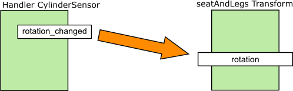
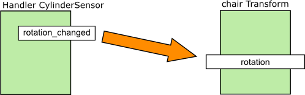
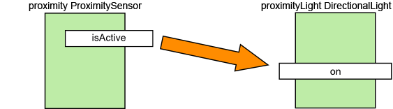
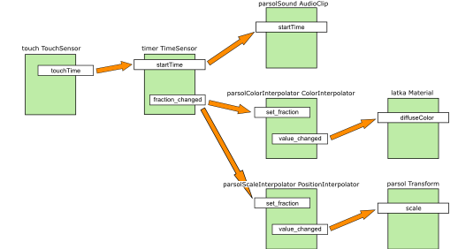

Plovárna
Semestrální práce do předmětu Y36MVR, zimní semestr 2009, cvičení pátek 9:15, tým 3
Technická specifikace - Stůl se slunečníkem
Autor: Jiří Mašek
Popis řešení
Model obsahuje 4 úrovně detailů.
- < 25 m
- Při vzdálenosti menší než 25 metrů se model zobrazuje se všemi detaily.
- 25 - 70 m
-
Textury jsou v modelu nahrazeny barvami.
Laťky tvořící sedák a opěradlo židle jsou nahrazeny kvádry.
Nohy židlí reprezentované uzly Extrusion jsou nahrazeny kvádry.
Tyčky, jenž tyto nohy spojovaly, jsou vynechány.
Látkový potah slunečníku tvořený uzlem Extrusion je zjednodušen.
- 70 - 120 m
- Celý model je nahrazen uzlem Billboard.
- > 120 m
- Celý model je nahrazen prázdným uzlem Group {}.
Parametry prototypu
PROTO TableWithParsol [ exposedField SFInt32 lod 1 exposedField SFColor parsolColor 0.286882 0.274000 0.000000 exposedField SFColor lightColor 0.286882 0.274000 0.000000 exposedField MFString chairTexture "./textures/284-v2.jpg" exposedField MFString billboardTexture "./textures/billboard.png" ]
Geometrie
- První úroveň - 36 521 trojúhelníků
- Druhá úroveň - 24 723 trojúhelníků
- Třetí úroveň - 1 742 trojúhelníků
- Čtvrtá úroveň - 0 trojúhelníků
Textury
| Jméno textury | Náhled | Velikost | Poznámka |
|---|---|---|---|
| Dřevo |  |
76.4 kB | Textura je použita pro opěrátko a sedák skládací židle. |
Zvuky
| Jméno zvuku | Link | Velikost | Délka | Poznámka |
|---|---|---|---|---|
| Zavírání slunečníku | umbrella_2.wav | 195.5 kB | 1,1s | Zvuk doprovázející zavírání slunečníku. |
Schéma dynamických akcí
| Název akce | Realizace | Popis |
|---|---|---|
| Složení židle |   |
Kliknutím a tažením na sedátko židle je možné jej zvednout až do vodorovné polohy vůči nohám, ke kterým je připevněno. I je pak lze kliknutím a tažením přiklopit k opěradlu, přičemž následným kliknutím a tažením na opěradlo je možné poklopit celou židli dopředu. |
| Osvětlení modelu |  | Při přiblížení se modelu se je model osvícen světlem, jehož barvu lze definovat parametrem prototypu. |
| Animace a ozvučení slunečníku |  | Kliknutím na potah slunečníku dojde k jeho zavření a změně barvy. |
{kind=link}